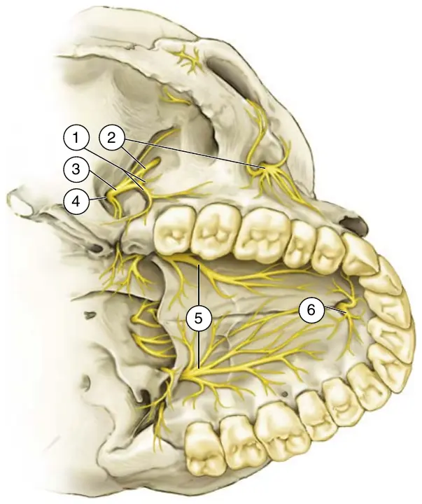
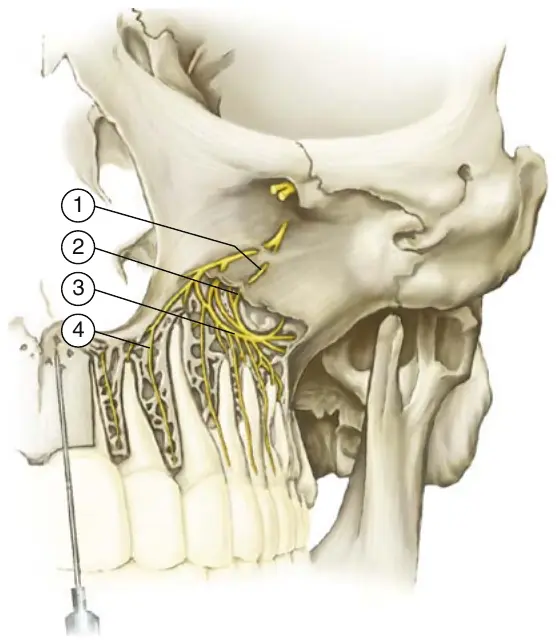

نسخه استخراجشده؛ ترجمه یا تأیید علمی انجام نشده است. وضعیت: captured
برای کشیدن مولر اول بالا، دندانپزشک بلاک عصب آلوئولار فوقانی خلفی (PSA) و یک اینفیلتراسیون، یعنی تزریق کنار نوک ریشه، روی ریشهی مزیوباکال زده است. دندان به تست سرما پاسخ نمیدهد، ولی وقتی فورسپس را روی لثهی پالاتال میگذارد، بیمار از جا میپرد. ریشهی پالاتال بیحس نشده یا ماجرا چیز دیگری است؟

پالپ همهی ریشهها، از جمله ریشهی پالاتال، را عصبهای آلوئولار فوقانی میدهند؛ پس پالپ بیحس است. اما مخاط، پریوست و استخوان سمت کام قلمرو عصب پالاتین بزرگ است که در کانال خودش پایین میآید و هیچ تزریق باکالی به آن نمیرسد. برای کشیدن دندان بالا، بیحسی کام را جدا بزن.
عصبهای آلوئولار یکراست به ریشه نمیروند؛ شاخههای انتهاییشان شبکهی دندانی را میسازند و هر رشته همراه یک شریان است. سه نوع رشته از این شبکه بیرون میآید:

اشتباه رایج: گمان اینکه هر دندان فقط یک عصب دارد. مولر اول بالا ممکن است از PSA و MSA عصب بگیرد، بخش مزیال مولر اول پایین از عصب میلوهایوئید، و ثنایاهای پایین از فیبرهای سمت مقابل. هر جا فقط بخشی از یک دندان حس دارد، به عصب دوم فکر کن و همانجا تزریق مکمل بزن، نه اینکه کل بلاک را تکرار کنی.